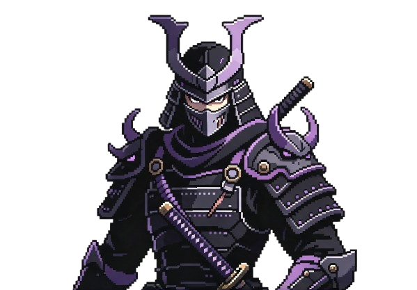

Akane no Yuki (A Neve Carmesim)
Nome verdadeiro: Akane Hoshikage
Apelido: Akane no Yuki (A Neve Carmesim)
Título: A Assassina da Neve Sangrenta
Origem: Japão
Ele foi um samurai leal que serviu o governo do Japão na guerra. Ao fim do conflito, foi traído, emboscado e deixado para morrer. Sobreviveu e agora vive apenas para se vingar de quem o traiu.